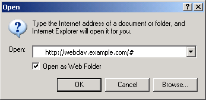

Setting it up
This section describes how eZ Publish can be configured in order to function as a WebDAV server. Please note that the DNS and the web server also needs to be configured.
Step 1: Enable the WebDAV server
The master WebDAV switch must be turned on. Create a global configuration override for "webdav.ini" and make sure that it contains the following lines:
[GeneralSettings] EnableWebDAV=true
Step 2: Add the desired siteaccesses
In order to allow WebDAV access for a specific siteaccess, the name of the siteaccess must be specified in the "SiteList[]" array under "[SiteSettings]" in a configuration override for "site.ini". Make sure that the global configuration override for "site.ini" contains the necessary lines. The following example shows how WebDAV can be opened up for a siteaccess called "plain_user" and another one called "example".
[SiteSettings] SiteList[] SiteList[]=plain_user SiteList[]=example
Step 3: Clear all caches
The eZ Publish part of the configuration is done. Clear all caches in order to make sure that the system uses the updated version of the configuration.
Step 4: Setup a DNS entry
Set up a DNS entry (for example a subdomain) that will be used to access the WebDAV server. The entry must point to the IP address of the web server. For example, if you're using "www.example.com" to access the web pages, you could set up "webdav.example.com" for WebDAV.
Step 5: Configure the web server
There is a file called "webdav.php" in the root of the eZ Publish directory. This file provides the actual WebDAV interface. The web server must automatically execute this file whenever a WebDAV client sends a command to the server. The following lines show an example of how this can be done in the configuration file of the Apache web server.
<Virtualhost 128.39.140.28> <Directory /path/to/ezpublish> Options FollowSymLinks Indexes ExecCGI AllowOverride None </Directory> DocumentRoot /path/to/ezpublish RewriteEngine On RewriteRule . /webdav.php ServerAdmin admin@example.com ServerName webdav.example.com </VirtualHost>
Note: make sure that you have a "NamedVirtualHost" line before the declaratoin of the virtual hosts.
Step 6: Test
Launch a WebDAV compatible client / application and attempt to connect to the server.
Internet Explorer
Recent versions of Microsoft's Internet Explorer (6.0.2800.1106 or later) contain a built-in WebDAV client. The target address must be opened as a web folder.
- Start Internet Explorer.
- Access the "File" menu and select "Open", a dialog should appear.
Type in the address of the WebDAV server along with a hash ("#") character at the end, like this: http://webdav.example.com/#
WebDAV - IE open dialog
- Make sure that the "Open as web folder" checkbox is checked.
- Click OK. You should be able to see the available siteaccesses as directories.
KDE/Konqueror
Make sure you have a recent version of Konqueror (3.1.3 or later). Open up a Konqueror window and attempt to browse the WebDAV server by accessing it using a URL that resembles the following example: "webdav://webdav.example.com/".

WebDAV - Content node tree
Balazs Halasy (10/11/2005 12:23 pm)
Balazs Halasy (10/11/2005 2:24 pm)
Comments
There are no comments.